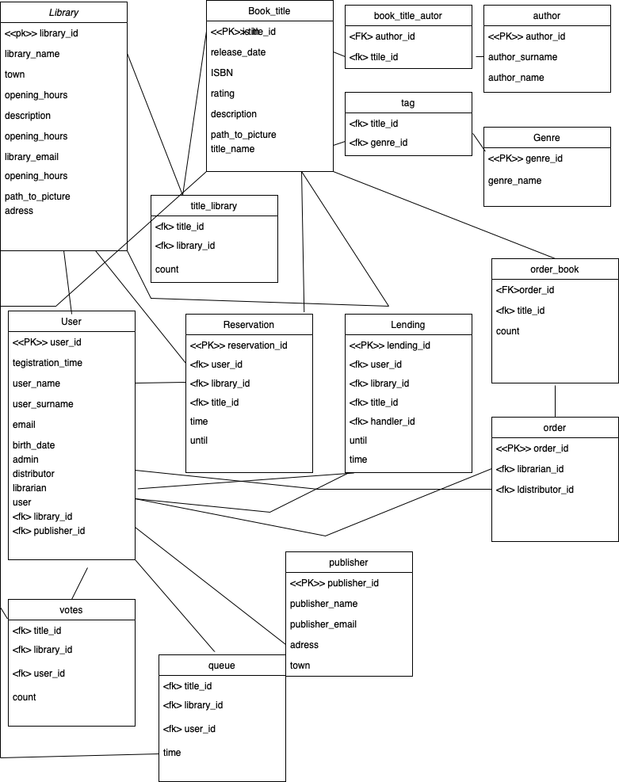

| Login | Heslo | Role |
|---|---|---|
| admin@gmail.com | Admin123 | Administrátor |
| librarian@gmail.com | Librarian123 | Knihovník (pracuje v Knihovně Brno) |
| distributor@gmail.com | Distributor123 | Distributor (pracuje ve vydavatelství Vydavatel s.r.o) |
| uzivatel@gmail.com | Uzivatel123 | Běžný uživatel |
Aplikace je implementována pomocí frameworku Flask v programovacím jazyce Python.
Frontend webové aplikace je implementován v jazyce HTML (s šablonovacím systémem Jinja2), CSS, a Javascript (s
knihovnou Jquerry).
Hlavní soubor aplikace - app.py pouze vytváří aplikaci jako takovou a spouští ji. Všechny další potřebné soubory
jsou ve složce website
Pro asynchronní komunikaci je použita knihovna Jquerry ($.ajax). Asynchronní komunikace se serverem se používá
napříč celou aplikací.
Aplikace je rozdělena do několika souborů, které řídí chod celé aplikace.
Systém pro běžné uživatele je plně responsivní. Systémy pro administrátora, knihovníka a distributora responsivní nejsou, protože jsme předpokládali, že každý z těchto rolí bude svou práci vykonávat na velkém monitoru: Knihovník většinou pracuje na počítači nebo tabletu, distributor a administrátor na počítači.
__init__.py - V souboru je inicializace celé aplikace. Připojení k databázi a provázání všech následujících souborů pomocí Flask Blueprintů.
views.py - Logika hlavní aplikace - stránky pro běžné uživatele, neregistrované uživatele.
admin.py - Logika administrátorskej stránky pomocou ktorej je je možné upravovať, pridávať a odstraňovať jednotlivých aktérov informačného systému, alebo ich pridávať ,ktoré vlastnia.
auth.py - Logika registrování, přihlašování a odhlašování uživatelů.
distrib.py - Systém pro distributory - potvrzování objednávek, přehled knih distributora a možnost vložit novou knihu
librarian.py - Systém pro knihovníka - správa rezervací a výpůjček v knihovně, kde knihovník pracuje, tvoření objednávek od distributorů, správa knížek v knihovně a možnost vložit novou knihu do systému. Nahlížení do anket (ukazování, kolik lidí hlasovalo pro objednání určité knihy do knihovny)
database.py - Správa požiadavkov na databázu t.j vkladanie položiek, uprava položiek, dotazovanie sa na konkrétne dáta v databázy atd. Taktiež sa tu každým dotazom na databázu kontroluje stav pripojenia k serveru , a v prípade že je aplikácia z nejakého dôvodu nepripojená, tak sa pripojenie obnoví.
static - Zde se nacházejí statické soubory (CSS,JS,obrázky,ikony)
JS soubory - v adresáři s Javascriptovými soubory jsou všechny JS prostředky pro asynchronní komunikaci, responsivní design - jako např. Kontrola registrace (správný tvar všech požadovaných informací), Prostředek pro podávání zpráv uživately (Toast), vyskakující okno, živé vyhledávání.
templates - Zde se nacházejí HTML soubory, které se používají ve funkci z modulu FLASK render_template. Tyto soubory se renderují, když uživatel navštíví jakoukoliv stránku aplikace.
Databáza je vytvorená v jazyku MySQL. Na hosting databázy sme použili free hosting server heroku. schéma databáze:
Aplikaci jsme se do posledního detailu snažili doladit, bohužel jsou zde nějaké známé nedostatky:
Pokud běžný uživatel chce zarezervovat knížku, která na dané knihovně není právě dostupná - může se přidat do fronty, ale v zadání není specifikováno, jak se s frontou dále pracuje - proto jsme dále tuto funkcionalitu neimplementovali.
Administrátor webové aplikace má přidělena všechna práva - aby se, ale dostal do knihovnického/distributorského systému, musí si v administrativě uživatelů přiřadit danou knihovnu/distributora.
Uživatel může prodloužit výpůjčku a rezervaci kolikrát chce (to není chyba, ale znamenalo by to, že kdyby uživatel chtěl může si knihu nechat)
Hodnocení knih je počítáno pouze z uložené hodnoty v databázi - Tzn. dělá se průměr mezi uloženou a zadanou hodnotou od uživatele. (není to úplně nejlepší způsob uchovávání hodnocení.) a uživatel může hodnotit kolikrát chce.
Pokud se mění práva/informace o uživateli, je třeba aby se tento uživatel po změně informací odhlásil a pak znovu přihlásil, protože tyto data jsou ukládáný do sessions, které se obnovují při přihlášení.